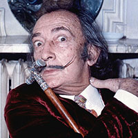
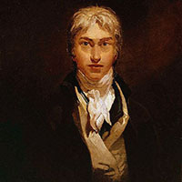
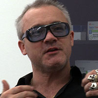

Salvador Dali
Spanish surrealist artist known for dreamlike imagery and symbolic scenes.

when
born 1901
died 1989
famous works
The Persistence of Memory
Metamorphosis of Narcissus
The Sacrament of the Last Supper
Spanish surrealist artist known for dreamlike imagery and symbolic scenes.

born 1901
died 1989
The Persistence of Memory
Metamorphosis of Narcissus
The Sacrament of the Last Supper
English romantic painter celebrated for light, atmosphere, and dramatic seascapes.

born 1775
died 1851
Burial at Sea
The Grand Canal, Venice
The Fighting Temeraire
British contemporary artist known for provocative conceptual installations.

born 1965
The Physical Impossibility of Death in the Mind of Someone Living
Pharmacy
Anthraquinone-1-Diazonium Chloride